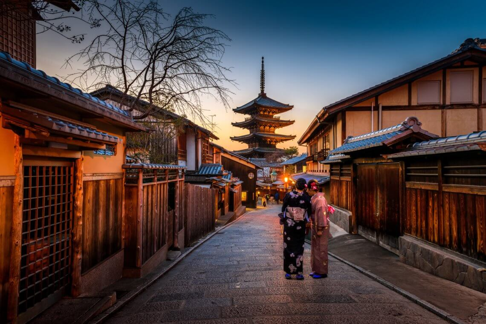

Alle stedene her er ut fra min personlig mening, så andre kan være
uenige om denne mendingen.
Jeg håper mange andre er enige om at disse stedene her er de kuleste på
grunn av jeg synse det
Her er listen:
1. Japan, Kyoto

Kyoto er en historisk by i Japan kjent for sin rike kulturarv og
velbevarte tradisjoner. Byen var Japans
keiserlige hovedstad i mer enn 1 000 år, fra 794 til 1868, før
hovedstaden ble flyttet til Tokyo. Kyoto
er berømt for sine mange templer, helligdommer og tradisjonelle hager.
Det finnes over 1 600
buddhistiske templer og 400 shinto-helligdommer i byen, hvorav noen av
de mest kjente er Kinkaku-
ji (Den gyldne paviljong) og Fushimi Inari-taisha. Kyoto er også kjent
for sin kobling til tradisjonelle
japanske kunster som te-seremonier, ikebana (blomsterarrangement) og
geisha-kultur, som fortsatt
lever i distrikter som Gion.
2. Japan, Tokyo
Tokyo, Japans hovedstad, er en av verdens mest folkerike og dynamiske
byer. Med over 37 millioner
innbyggere i storbyområdet er Tokyo et globalt finans- og handelsnav.
Byen er kjent for sin blanding
av tradisjon og modernitet, hvor futuristiske skyskrapere står side om
side med historiske templer og
helligdommer. Tokyo har vært Japans politiske og kulturelle sentrum
siden 1868, da keiseren flyttet
hovedstaden fra Kyoto. Blant de mest kjente stedene i Tokyo er det
keiserlige palasset, Shibuya-
krysset, og Tokyo Tower. Byen er også et senter for teknologi, mote,
kunst og gastronomi, med flere
Michelin-stjernede restauranter enn noen annen by i verden.
3. UAE, Dubai

Dubai er en by i De forente arabiske emirater (UAE) og et av de mest
kjente finansielle og
turistmessige sentrene i verden. Den ligger ved Persiabukta og har
utviklet seg raskt fra en liten
ørkenby til en moderne metropol på bare noen få tiår. Dubai er kjent for
sine ikoniske bygninger,
som Burj Khalifa, verdens høyeste skyskraper, og det kunstige
øyprosjektet Palm Jumeirah. Byen har
et rikt handelsliv, drevet av oljeinntekter som la grunnlaget for
veksten, men nå er Dubai mer kjent
for turisme, finans, teknologi og eiendom. Det er også kjent for
luksuriøse kjøpesentre, et yrende
natteliv, og arrangementer som Dubai Shopping Festival og World Expo
2020. Til tross for sin
moderne karakter, har Dubai bevart sin arabiske kultur og tradisjoner.
4. Italia, Roma

Roma, hovedstaden i Italia, er en av verdens mest historiske og
kulturelt rike byer. Grunnlagt for over
2 700 år siden, var Roma sentrum for det mektige Romerriket, som på sitt
høydepunkt kontrollerte
store deler av Europa, Midtøsten og Nord-Afrika. Byen er kjent for sine
mange ikoniske landemerker,
inkludert Colosseum, Forum Romanum, Pantheon og Vatikanstaten, som er
hjemmet til paven og
Peterskirken. Roma er også kjent som "den evige stad" på grunn av sin
lange og betydningsfulle
historie. I tillegg til sin historiske arv er Roma et viktig senter for
kunst, arkitektur, religion og
gastronomi. Byen har en unik blanding av antikke ruiner,
renessansepalasser og moderne livsstil, noe
som gjør den til et populært turistmål og et kulturelt sentrum i Europa.
5. USA, Los Angeles

Los Angeles, ofte forkortet til LA, er den største byen i delstaten
California og den nest største byen i
USA. Byen er kjent som underholdningshovedstaden i verden, med Hollywood
som sentrum for film-
og TV-produksjon. LA er hjem til store filmstudioer, stjerner og kjente
landemerker som Hollywood
Walk of Fame og Griffith Observatory. Byen har også en rik
kulturhistorie og et mangfoldig samfunn,
med etniske nabolag som Little Tokyo og Chinatown. Los Angeles har et
behagelig middelhavsklima
med varme somre og milde vintre, og er omgitt av vakre strender som
Venice Beach og Santa
Monica, samt fjellområder som tilbyr gode muligheter for friluftsliv.
Byen er også et stort økonomisk
senter med viktige industrier innen teknologi, mote, og internasjonal
handel, i tillegg til underholdning.
6. Kina, Hong Kong

Hongkong er en spesiell administrativ region (SAR) i Kina, kjent for sin
unike status som et globalt
finanssenter med en blanding av østlig og vestlig kultur. Regionen var
en britisk koloni frem til 1997,
da den ble overlevert tilbake til Kina under prinsippet "ett land, to
systemer," som gir Hongkong en
høy grad av autonomi i 50 år etter overleveringen. Byen er kjent for sin
imponerende skyline, travle
havn og sin strategiske beliggenhet ved Sør-Kinahavet. Hongkong er også
et kulturelt knutepunkt,
med en rik historie, internasjonale festivaler, og en mangfoldig
befolkning. Byen er et viktig
handelssenter, har en av verdens travleste flyplasser, og er kjent for
sine shoppingmuligheter, fra
luksusbutikker til travle markeder. Til tross for sin modernitet, har
Hongkong også bevart mange av
sine tradisjonelle kinesiske røtter, med templer, markeder og
kantonesisk mat som en integrert del av kulturen.